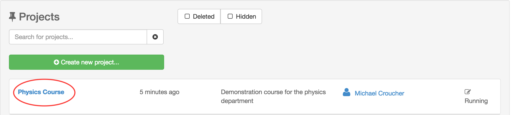
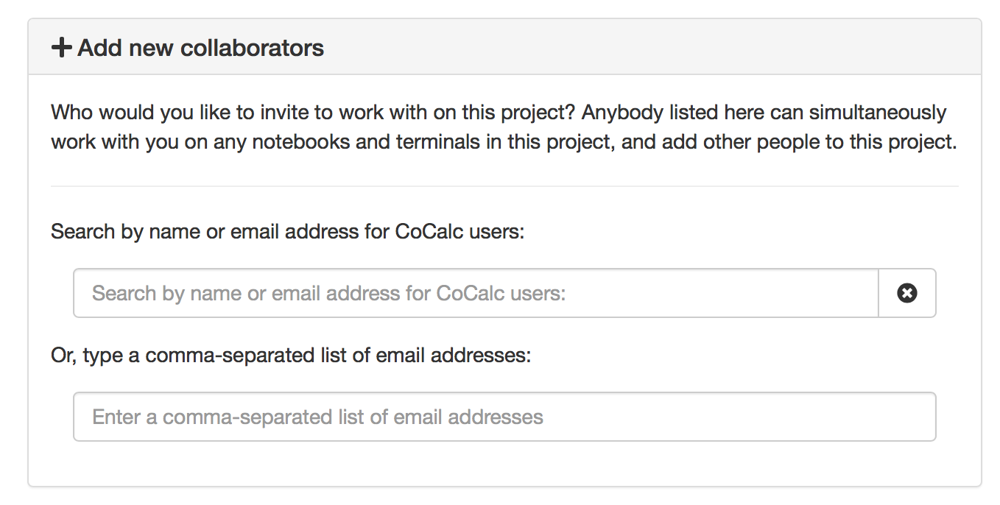
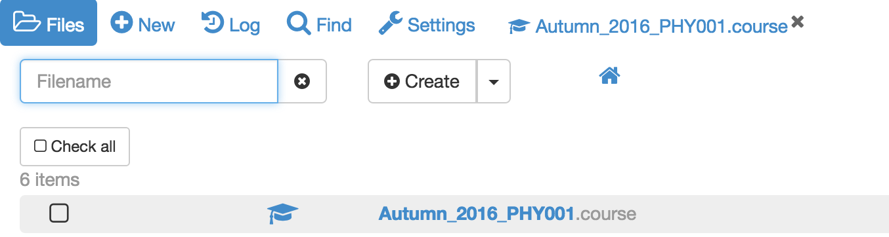
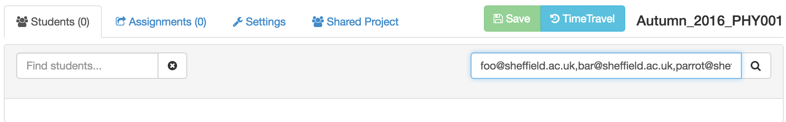
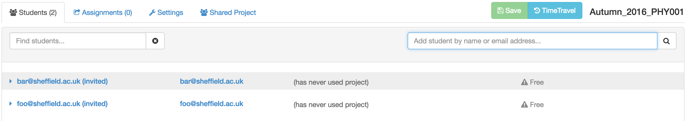
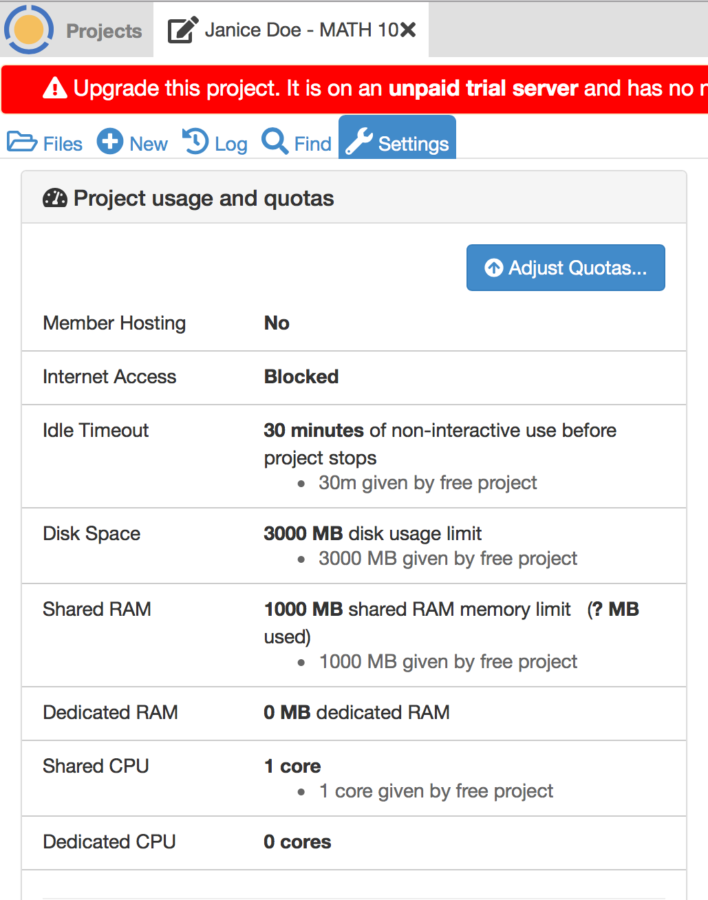
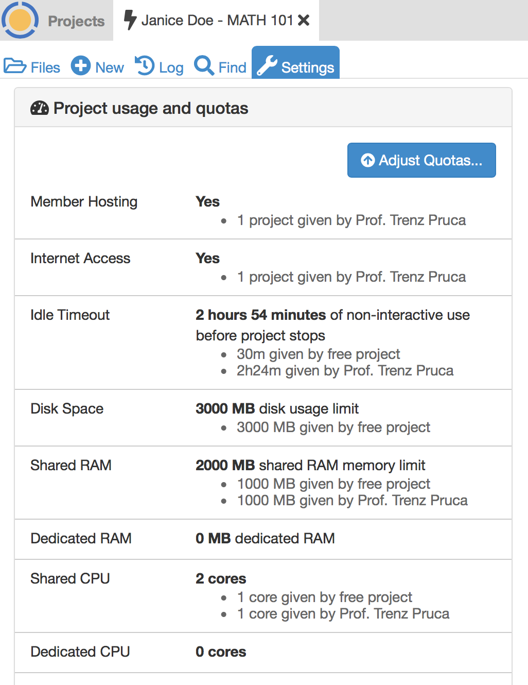

Notes on Managing Courses¶
Some quick items before going into the details…
Setting up a Course with a Site License¶
For the best results, follow these steps when setting up a course with a site license:
1. Obtain a license key.¶
At present, you need to contact us directly at help@cocalc.com to buy a site license. Soon, we will add the ability to buy site licenses online.
A license key is a hexadecimal uuid string. It looks like this:
78caa80a-4ddf-11ea-a5e5-53e10ace7b7b
3. Create a .course file.¶
Use the (*)New button to create a .course file for managing your course.
4. Install your license in the .course file.¶
- Open the
.coursefile and click “Configuration.” - Check the box for “You or your institute will pay for this course”.
- Click “Upgrade using a license key…”.
- Paste in your license key and click “Save”. You will see additional text where you entered the license key, indicating which upgrades will be applied and the maximum number of simultaneous running projects that can use this license.
5. Restart the teaching project.¶
In project Settings (wrench icon), restart your project so that the license will be applied. Click “Restart Project…” then click “Yes, restart project” in the confirmation dialog.

license entered in course Configuration; about to restart teaching project
In project Settings, within a few seconds you will see that the teaching project is being upgraded. The warnings about running on an unpaid server will be gone, and you will see your license upgrades applied to the teaching project, including Member Hosting and Internet Access.
project settings after restarting teaching project
License setup done!¶
You have just completed the steps to create a teaching project, upgrade the teaching project, and create a .course file. You are ready follow steps below to add TAs, if any, add students, and set up handouts and assignments.
VFAQ¶
Very Frequently Asked Questions. We’re putting these here because we get them so often. Further course plan/quotas related questions are answered in Billing/Upgrades FAQ.
Can I combine course plans to provide upgrades for a single course?¶
YES
For example, if you expect 35 students in a course, you could buy one Extra Small plan for 10 students, and one Small plan for 25 students.
Can I teach multiple courses with a single plan?¶
YES
Upgrades can be mixed and distributed in a very flexible way. For example, if you are teaching one course with 30 students and another with 40 students, you could buy a single Medium plan for 70 students, and then allocate upgrades for student projects for the two courses accordingly.
In general, upgrades of the same type, for example Member Hosting, are interchangeable. It doesn’t matter if the upgrade comes from a personal subscription or course plan. An upgrade can be applied to one project, removed from that, and applied to another project. This can be done as many times as desired until the upgrade expires.
Both the above questions apply to Teacher or institution pays for upgrades, described in detail below.
Upgrade the Teaching Project First!¶
If you’re using CoCalc course management, we strongly recommend that the project containing the .course file have upgrades for Member Hosting and Internet Access. These upgrades are available with any level of subscription to CoCalc. Some functionality that involves inviting students via email, notifications, etc., will only work with the Internet Access upgrade. We also pride ourselves on offering extensive support to paying customers. If you’re an instructor and need a free trial subscription, do not hesitate to contact us at help@cocalc.com.
Creating a New Course¶
In this section we will learn how to create a course project, how to populate it with a course management file and how to invite all of your students to join the course.
Creating the Course Project¶
The first step is to create an instructor’s project to contain the course.
Log into CoCalc and click on the Projects icon in the top left hand corner of the screen.
Click on Create New Project, fill out the Title and Description and click on Create Project

The new project will appear at the top of the project list. Click on its title to open it.
Adding Teaching Assistants to the Course¶
To add teaching assistants or other teachers to the course, open the course project, click on the settings tab and look down to see “Add new collaborators” in the project settings.
Under Add new collaborators, you can find or add collaborators by name or email address. These collaborators will also have access to all associated student projects orchestrated by that project. Do not add any students of yours as project collaborators!
If the email address you add as a collaborator is not associated with a CoCalc account, an email will be sent to that address with instructions how to join. Once the account with exactly that email address is created, that new user will be added automatically to all projects with pending invitations.
Creating the Course File¶
Almost all aspects of a course, such as which students are enrolled and assignment management, are controlled by a .course file. We’ll now create this file.
Open the course project, click on New and give the course a title. Here, I’ve used Autumn_2016_PHY001. Click on Manage a Course to create the course file.

If you go to the root of the course project directory, you will see that a new file has been created with the extension .course. This is the course management file and most aspects of your course are controlled by it.
Note
You may have more than one course file in a single project, as is explained in the next section. Be aware that that any account you add as a TA to the project will have access to course files and student work for all courses in that project.
Split course into multiple groups¶
Note: If your course is large, it is possible to partition your class into several groups or sections.
To accomplish that, simply create more than one course file.
For example, PHY001_A.course, PHY001_B.course, PHY001_C.course, …
for groups A, B, C and so on.
These course files are independent of each other, which allows not only different groups of students, but also different due dates, etc.
Adding Students to the Course¶
Open your course by clicking on the .course file.
In the Students tab, add a comma separated list of students’ emails addresses in the search box and click on the search icon.
If you have a particular large class, the above method may take a very long time. If you have your students’ email addresses in an Excel spreadsheet (or Google Sheet) you can copy and paste them directly in the Add student box.
After parsing the list, you can either explicitly the students to add (press shift or ctrl key for multiple selections), or just click the “Add all students” button.
Next, the student projects will be created. Please be patient until all students are processed and do not close CoCalc.

If your project (the one with the .course file) has the Internet Access upgrade, any student who does not have an account on CoCalc will be sent an email invitation to create an account and join your course. For security reasons, CoCalc does not automatically send email invitations to students added if they already have a CoCalc account.
Your course page will now look like this
- Email addresses that are followed by (invited) do not have a CoCalc account yet. (invited) will disappear as soon as they sign up.
- You can see when each student last used the course project. In this case – never!
- The ! Free warning next to each student shows that they are running this course on free servers. It is strongly recommended that you upgrade this to members-only servers for your students. You can also require in the configuration page that your students pay a small one-time fee to upgrade their projects (see below).
Note
Some email services, notably Hotmail and Yahoo Mail, may silently block emails sent from our service. In that case, an invitation to sign up will not appear in the inbox or spam folder of the intended recipient and another method must be used to communicate sign-up information to the student.
Reconfiguring student projects and re-issuing email invitations. To ensure student projects have correct students and TA’s, titles and descriptions, click Reconfigure all projects. Doing so will also resend email invitations to students who have not already signed up for CoCalc.
“Reconfigure all projects” at lower right in Configuration
What do the Students Get?¶
On being invited to a course, each student will have a project created for them in their CoCalc account that corresponds to that course. Each project will have you and the course Teaching assistants set as collaborators.
The student’s course project will have its own individual quotas set for disk storage, internet access and so on (e.g. students get 1GB of RAM). These quotas will be the standard set of quotas that everybody gets with free CoCalc projects.
You can learn more about upgrades and quotas in the Project Upgrades.
Upgrading Student Projects¶
The Configuration tab of a .course file allows you to upgrade students’ course projects in two ways, indicated by the checkboxes in the image below:

Students pay for upgrades¶
You can request that the students pay a one-time fee of $14 for four months. This will move their projects to members-only hosts and enable full internet access.
If you click “Students will pay for this course”, another checkbox appears, “Require that students upgrade…”:

When you check that checkbox, a calendar form opens. The default is to require students to pay within one week, but you can change the deadline. Select a different date if you want, or leave it at the default, and click “Close”.

To continue from the perspective of your students, read the instructions for students to pay for a course.
Can we mix free and upgraded student projects?
Yes. Just set the due date by which the students have to pay to be at the end of the course. Give them the opportunity to pay for an upgrade for the first few weeks (say), then just unclick the student pay checkbox and thus no longer requiring them to pay at all. In short, whether they have to pay or not is something you can change at any time, they have a grace period before being required to pay, and you can change any of these settings at any time.
Teacher or institution pays for upgrades¶
Note
CoCalc now supports site licenses in addition to the upgrade system described in this section. Licenses greatly simplify managing student upgrades, especially when dealing with multiple courses or sections. See our News update on site licenses for more information. Contact us at help@cocalc.com if you are interested in a site license.
Assuming you are an instructor and want to setup everything for a course, here are the rough steps to pay for upgrading your students’ projects.
Background: The course purchase option provides you with upgrades for your account, but you then distribute these upgrades to all student projects in your course (these projects are automatically created for the course). The students then fully benefit from using these upgraded projects.
In your account settings, next to the “upgrades” page, there is a tab “Subscriptions/Course packages”. In that tab, enter your payment information and purchase one or more course packages. We can help you if you are not sure which one to buy (it depends on the size of the class, your needs, etc) or if you need us to process a format purchase order (PO), etc.
Once you purchase the course upgrades, go to the project where you created the course and open the .course file. In that interface, where you can add the students, etc. there is also a tab called “Configurations” (next to “Students”, “Assignments”, etc.).
Current pricing is available at <https://cocalc.com/policies/pricing.html> which at the time of writing ranged from a total of about $7 to $14 per student for a 4 month course. The price per student varies according to the size of the student cohort. You get significant per-student discounts when you buy in bulk.
… and after selecting that “you/your institution pays”, you can proceed to distribute the upgrades of the course package here:

Clicking “Adjust upgrades…” lets you allocate any available upgrades in your account.
Entering initial student upgrades¶
The following screenshots assume the instructor has purchased a One Week Standard Extra Small subscription, with upgrades for 10 projects, and applied upgrades to the TEACHING project, leaving upgrades for 9 student projects. Two students have been added to the “MATH 101” .course file.
After clicking Adjust upgrades… as shown above, this is what the instructor sees:

The instructor enters the usual upgrades per student for Standard subscriptions:
- Member Hosting: ✓
- Internet Access: ✓
- Idle Timeout: 2.4 hours
- Shared RAM: 1000 MB
- Shared CPU: 1 core

After checking that everything looks right, the instructor clicks Apply changes.
Adding more student upgrades¶
Now suppose a third student arrives after the previous upgrades have been applied. The instructor again opens the .course file, selects Configuration, and clicks Adjust upgrades…. Note the message at the bottom of the dialog that only one of the student projects will be upgraded.
Without making any changes to the numbers entered, the instructor again clicks Apply changes. The third student project is now upgraded.

What the student sees¶
Here is what a student will see upon opening his/her student project for the course.
First, this is what is seen if the instructor has not yet applied upgrades for the student project. Note the red banner warning that the project is not upgraded.
Second, this is what is seen if the instructor has added typical upgrades for a Standard course. The exact amounts added will vary for different plans. For example, Basic courses include upgrades for Member Hosting and Internet Access, but not for other resources. Note in the Projects toolbar at very top, that the project is restarting. That is because upgrades were applied by the instructor moments ago.

{kind=link}
{kind=link}
{kind=link}
{kind=link}
{kind=link}
{kind=link}
{kind=link}
{kind=link}
{kind=link}
{kind=link}
{kind=link}
{kind=link}
{kind=link}